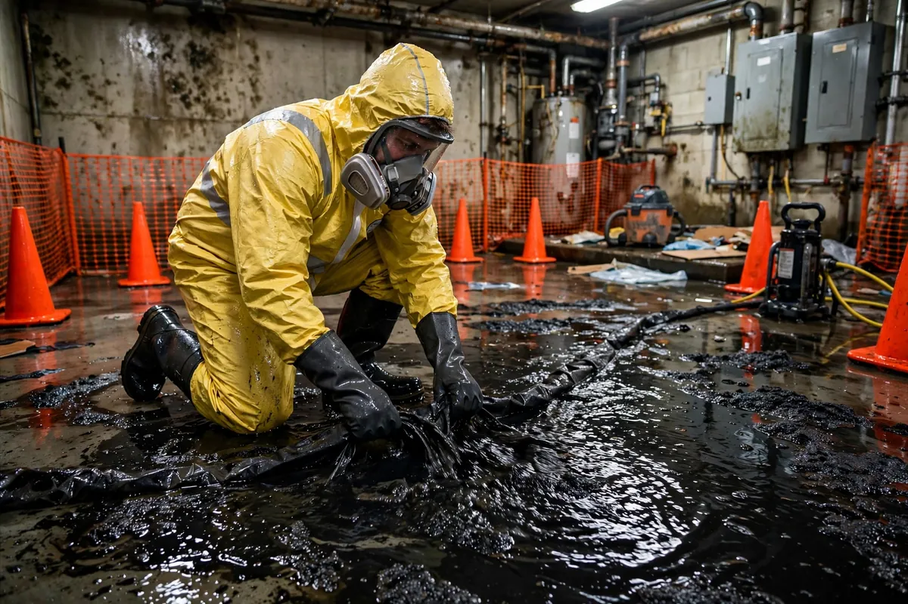

Black Water Cleanup in Hollywood, FL
Black water — Category 3 — is water contaminated with sewage, rising floodwater, or other grossly unsanitary sources. It carries bacteria and pathogens that make it a health hazard, not just a property problem. Black water cleanup in Hollywood, FL follows strict containment and removal protocols, and the guidance for homeowners is simple: don't touch it, and don't try to clean it yourself.

Understanding Black Water Cleanup in Hollywood
Sewage backups are the most common source: a blocked main line or an overwhelmed municipal system during heavy rain pushes wastewater up through toilets, tubs, and floor drains. Floodwater that has traveled across ground surfaces also qualifies as Category 3, because of everything it picks up along the way. The contamination isn't always visible — water that looks merely dirty can carry pathogens. Anything porous it touched is treated as contaminated: carpet and pad, drywall, insulation, upholstered furniture, and stored soft goods.
Time makes it worse. Organic contamination doesn't stay put — as water evaporates, contaminants concentrate, and microbial activity increases in Hollywood's warmth. That's why black water response prioritizes speed differently than a clean-water leak: safe removal of affected materials comes first, drying second. Odors are a signal, not just a nuisance — they indicate biological activity that must be addressed at the source, not masked.
How We Handle the Job
Safety comes before everything: the affected area is isolated, and technicians work in protective equipment. Contaminated standing water is extracted with dedicated equipment that isn't used on clean-water jobs. Then comes removal — porous materials that absorbed black water are cut out, bagged, and disposed of following local regulations. This isn't a judgment call; it's the protocol. Hard, non-porous surfaces that remain are cleaned and disinfected before any drying begins.
After removal and cleaning, the remaining structure is dried with air movers and dehumidifiers, and the area is verified dry before reconstruction. Remaining hard surfaces are treated at this stage as standard practice. Every step is photographed and documented — for your records, and because insurers require clear evidence of Category 3 protocol on these claims. Related services such as emergency water extraction, structural drying, and flood cleanup often connect to the same loss depending on conditions on site.
Local Response and Insurance Support
Searching for black water cleanup near me usually means you need help without delay. We answer emergency calls around the clock. Documentation — photos and moisture readings — supports conversations with your insurance carrier when the loss is sudden and accidental. We do not decide coverage; we provide clear technical information about the work performed.
When to Call
Call if you have active water, wet materials that are not drying, odors after a leak, or a backup that may involve contaminated water. Early action in Hollywood’s climate is almost always less disruptive than waiting. For neighborhood-specific service, see our service areas. For the full list of capabilities, visit all services.
Frequently Asked Questions
Can I clean up a small sewage backup myself?
We strongly advise against it. Even a small backup involves water classified as a health hazard, and household cleaners plus a box fan don't make contaminated porous materials safe. Without proper protective equipment and disposal procedures, you risk exposure and spreading contamination into clean areas. This is the category to leave to professionals.
Does everything the sewage touched have to be thrown away?
Porous materials — carpet, pad, drywall, insulation, mattresses, upholstered furniture — generally yes; they can't be reliably disinfected once saturated. Hard, non-porous surfaces like tile, concrete, and sealed wood can usually be cleaned and disinfected. A technician will go through affected items with you rather than making blanket decisions.
How do I know if it's black water or just dirty water?
If it came from a toilet beyond the tank, a sewage backup, or floodwater that traveled across the ground, treat it as Category 3. Gray water from washers or dishwashers can escalate to Category 3 if left sitting. When in doubt, assume the worse category — the safety protocols only go one direction.
Will my home smell after black water cleanup?
Proper cleanup removes the odor at its source — contaminated materials out, remaining surfaces cleaned and disinfected, structure dried. A lingering odor after that process usually means something was missed, like contamination inside a wall cavity or under flooring, and it warrants a second look rather than air fresheners.